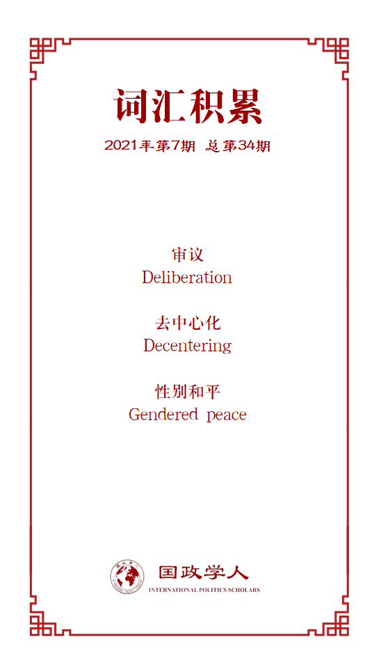

收录于合集

作品简介
【作者】 Denisa Kostovicova，现于英国伦敦政治经济学院任教，她致力于研究冲突后重建。她运用自下而上的视角研究从战争到和平的过渡，并研究跨界动态（政治、社会和经济）及其对冲突后恢复的影响；Tom Paskhalis，纽约大学社会媒体和政治中心的博士后研究员，研究领域为比较政治和英国政治、政治传播、游说和社交媒体。
【编译】 廖泽玉（国政学人编译员，大连外国语大学）
【校对】 朱晓洁
【审核】 聂涵琳
【排版】 余姣
【美编 】游钜家
【来源】 International Studies Quarterly , Volume 65, Issue 2, June 2021, Pages 263–276, https://doi.org/10.1093/isq/sqab003.
期刊简介
《国际研究季刊》（ International Studies Quarterly ）是国际研究协会的旗舰期刊，由牛津大学出版社每年发行四期，旨在发表与国际研究中重要理论性、实证性、规范性主题相关的领先学术成果。根据Journal Citation Reports的数据，2019年该期刊的影响因子为2.146。
Denisa Kostovicova
Tom Paskhalis
性别、公平和审议：
为何女性无法影响和平缔造？
Gender, Justice and Deliberation: Why Women Don’t Influence Peacemaking
内容提要
学者们已经提出，女性在和平进程（peacemaking）中缺乏代表性，导致了无法代表女性需求和利益的性别差异。尽管女性在谈判桌上的代表性逐渐增加，但她们对于和平缔造的影响甚微。作者指出，在和平缔造的进程中，女性和男性在演讲中展现的 不同性别对话模式 ，可以解释女性的影响力被削弱的过程。文章通过研究女性在 巴尔干地区冲突后过渡时期的司法辩论体系 中的语言习惯来验证这一点。作者通过多种定量文本分析方法，分析了不同语言中超过50万个单词，从而分析出演讲的结构和主题模式。最终发现 男性在话语轮换中的主导性地位 和反映妇女需求和利益的讨论议题的匮乏，导致了一种性别化的结果。 没有证据表明，女性的影响力受限是由于她们讲话和商讨的质量较低所导致。这项在话语微观层面上的性别动态研究，界定了和平缔造中男性统治的新维度。
文章导读
01
引言
和平不仅仅是停止暴力。对和平质量的审查表明，和平常常令女性失望。冲突的结束为性别公正的和平奠定基础提供了的机会，这改变了不平等的性别关系，为妇女政治、社会和经济机构提供了条件。然而，冲突后缔造和平也会导致对妇女不利的规范、结构和权力关系。当务之急是让和平为妇女服务，这促使学者和从业者在缔造和平的过程中解决性别不平等问题。
妇女参与和平对实现性别公正的和平至关重要。然而，妇女更多地参与这些过程对其结果的影响有限。在妇女参与和平进程的背景下，一个重大难题是未能实现性别公正的和平。
作者通过分析女性和男性话语体系的差异，研究过渡司法程序中话语如何性别化，从而确定了建立和平过程中，基于性别的话语差异是如何造成无法反映妇女需求和利益这一性别化结果的。
尽管妇女拥有大体上平等的代表权，但她们缺乏影响力。为了证明这一点，作者提出并测试了在促成和平过程中的三种机制： 审议、胆量和去中心化 。作者发现，在女性广泛平等的代表权之下， 男性主导权轮换 以及 反映妇女需求的议题的缺乏 ，导致了女性处于不利地位这一性别结果。文章以巴尔干地区冲突后民间社会主导的过渡司法程序为例，来审查话语中的性别差异。
首先，文章回顾了关于性别和平与正义的学术辩论，并概述了对现有的妇女代表权与妇女在和平进程中有限影响的批判。其次，文章提出了一些解释为什么妇女在缔造和平中的代表地位不能转化为促进两性平等政策的机制。然后，文章介绍了数据和研究设计。最后，文章阐述对话语的性别性质的结果和分析。
02
性别和平与正义： （重新）评估 妇女在和平进程中的代表权
2000年，联合国安理会第1325号决议启动了妇女、和平与安全议程（WPS），促使学者和从业者对如何实现性别公正和平进行批判性反思。分析和平进程中女性的缺席及其后果极为重要，但仍需更深入地理解妇女在参与进程中的有限影响。
文中提出了一些来自政治代表和交流领域的见解，这些见解表明了对妇女在缔造和平方面的代表性进行更有力的评估的必要：妇女的存在相较于妇女的缺席或保持沉默。在讨论为什么妇女代表权无法转化为对缔造和平的影响的问题时，对妇女代表权的评估需要考虑妇女出席的比例和发言的次数、发言的持续时间以及她们提出的政策要点的数量。如果女性的存在与男性的存在相同，并且它未能转化为对政策的影响，我们可以转向对话语行为的分析，以找出在缔造和平中阻碍将描述性代表转化为妇女关注的实质性表征的原因。
03
于和平缔造中存在
但无影响力： 机制
作者认为，理解话语行为是理解导致缔造和平结果性别化过程中不可或缺的组成部分。作者提出了三种在公共话语中运作的机制，它们可以解释和平与正义过程中的性别化结果：审议、胆量和去中心化。
**
**
审议
审议突出了发言者贡献的内容。民主审议的学者们关注于在男女发言时如何证实自己的观点，研究了发言者论点的质量。审议交流在从冲突到和平的过渡中起着重要作用。承认妇女的关切取决于她们是与男性平等的审议伙伴。女性的沟通方式，包括深思熟虑，可以从差异/优势辩论的角度来理解。由于认识到在审议中冷静辩论的要求特别不利于女性，人们呼吁在民主讨论中重视各种不同的沟通模式。然而，审议的观点指出一种可能性，妇女在缔造和平方面的实质性边缘化可能是由男女之间的整体辩论质量不同造成的。
胆量
学者们强调了男女在语言使用方面的性别差异。然而，除了审议的质量之外，性别化的言论模式还包括公共话语的结构性维度：谁发言，他们什么时候这样做，有什么效果？因此，话语的性别特征源于对话的互动。发言的顺序也很重要：如果男性比女性更有可能连续说话呢？一种性别化的中断模式会产生性别化的后果。性别化的中断模式强调了在公开辩论中保持演讲机会的重要性。
作者指出， 说话的轮换结构可以限制审议空间 。如果说话的顺序是性别化的，并且在混合性别的辩论中男性比女性说话的时间更久，那么这可以为男性在辩论中占据主导地位铺平道路。如果是这种情况，整个辩论中的模式可能会限制女性的实质性贡献和其对辩论结果的影响力。
去中心化
研究政治代表性和过渡性公平的学者都提供了证据，指出男性和女性在贡献主题方面存在不同。因此，女性在公开辩论中讨论的话题也可以作为她们影响力或缺乏影响力的指标。然而，在冲突后的背景下，在真相委员会的诉讼程序和战争罪审判期间，女性会变得去中心化，她们不愿谈论自己在与冲突相关的暴力事件中的经历。
对女性和男性讨论的主题进行调查，还可以表明促成和平的结果在多大程度上响应了女性的关切。尽管越来越多的学者关注女性的演讲行为，但尚未对基于性别的演讲模式的主体和结构差异以及女性贡献的审议质量进行研究。作者提出和测试的这一机制，可以解释为何妇女在过渡时期的司法程序中的代表未能产生一个响应性别公正的过渡时期的司法工具。
04
研究设计
这一部分包括背景、案例选取、数据、预处理和方法五个部分。文章首先分析了RECOM（关于1991年1月1日至2001年12月31日在前南斯拉夫境内发生的战争罪行和其他严重侵犯人权的事实的区域委员会）基层民间组织的发起一项自上而下的过渡司法程序的背景和过程。之后，对选取RECOM规约草案作为案例的原因作了具体说明。再次，文章表明了对本文数据的来源及其应用。随后，文章指出了预处理文本数据的基本步骤并对其进行了简要说明。
05
验证妇女在和平缔造中的
代表权和影响力谜题
文章认为，需要对女性在和平缔造中的代表权进行更强有力的衡量。因而，文章将女性代表权区分为三个级别：（1）实际存在，（2）代表发言，以及（3）参与辩论。通过数据分析，结果表明，妇女在发言和提出论点方面都做出了贡献。因此，作者考察了三种机制：审议、胆量和去中心化，以评估话语中是否存在任何可能导致性别化结果的性别化模式。
06
测量审议质量
作者遵循格伯(Gerber)等人的方法（2018），并评估一个双参数贝叶斯项目响应理论（IRT）模型来计算审议质量的综合度量。文中给出了大量的数据和模型，结果显示，尽管并不显著，但女性发表的言语行为往往具有略高的审议质量。这表明，在过渡时期司法程序中， 女性演讲的审议质量并非是导致通过的规约草案无法满足女性需求、利益和关注的原因。
07
辩论的性别结构：胆量
上述机制将演讲作为单独因素加以考虑，但演讲并不是孤立发生的，它们通常是更大的原地或异地对话的一部分。将性别作为一个决定性因素是合理的：它并非决定某人的论点是否由充分依据，而是首先决定论点是否被表达出来。语料库中的数据显示，谈话很少被直接中断，但 辩论的组织方式也可能使参与者一开始就没有胆量发言。
**
**
因此，作者运用泊松(Poisson)多级模型加以分析。结果表明，说话者的性别与顺序演讲的数量有明显关联。总体而言，女性序列的平均演讲长度为1.97个演讲，而男性序列的平均长度为3.22个。这表明，辩论性动态可能源于一种 微妙的支配模式 ，这种模式在说话轮次的顺序水平上得以维持。我们所期待的“一位女性说话并鼓励另一位女性说话的模式”并没有发生，这说明 女性的论点无法在混合的性别环境中得到表达和维持 。这可能导致规约草案中缺少促进性别平等的条款。
08
主题差异：去中心化
文章将文本作为数据的分析方法。这一分析揭示了女性与男性之间广泛的主体差异模式。女性对规约的审议主要关注保留恢复司法程序的独特性质，并澄清其与该地区刑事司法系统的关系，而男性则侧重于委员会运作的“技术”和政治层面。
09
结论
虽然内容分析显示男性和女性关注主题的不同，但作者认为轮换性别结构是使女性对审议结果有影响的关键 。本文的研究解释了男性在轮换层面的主导地位，为女性在建立和平和更广泛的政治领域实现更大程度的性别平等提供了另一种可能的解决方案。
译者评述
文章从话语微观层面切入，更为细致的研究了演讲的过程和演讲内容对演讲结果性别化的影响，“研究了冲突解决和和平缔造是如何性别化的，但同时也对政治传播中男性统治研究感兴趣的政治代表和传播学者提供了新的见解”。[1]
文章通过对巴尔干地区冲突后过渡时期的司法辩论体系建立过称的辩论文本进行分析，从女性与男性审议质量是否存在差异、女性是否有胆量在男性潜在主导的话语顺序中表达自己的观点、以及男女在辩论时关注议题的类别这三个方面入手，得出了轮换结构和议题内容是女性对审议结果产生影响的关键因素。最后，作者指出，相较而言，轮换结构要更为重要。
文章对文本数据的分析和完整的逻辑推理结构，有助于读者完善认知体系。同时通过对本文的阅读，可以丰富性别与国际关系这一议题的了解，从而扩宽对于非传统安全领域国际关系的认识。
参考文献
[1]Denisa K, Tom P. Gender, Justice and Deliberation: Why Women Don’t Influence Peacemaking[J]. International Studies Quarterly , 2021.
词汇整理

文章观点不代表本平台观点，本平台评译分享的文章均出于专业学习之用, 不以任何盈利为目的，内容主要呈现对原文的介绍，原文内容请通过各高校购买的数据库自行下载。
好好学习，天天“在看”
国政学人
支持学术公益与知识传播
微信扫一扫赞赏作者 __赞赏
已喜欢，对作者说句悄悄话
取消 __
发送给作者
发送
最多40字，当前共字
上一页 1/3 下一页
长按二维码向我转账
支持学术公益与知识传播
受苹果公司新规定影响，微信 iOS 版的赞赏功能被关闭，可通过二维码转账支持公众号。